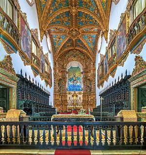
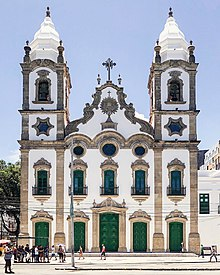
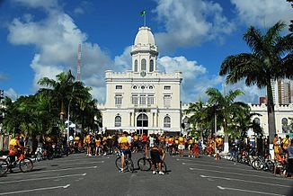
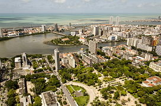

Marco Zero
   O Centro Histórico do Recife é uma área de ocupação antiga localizada no centro da cidade do Recife, capital do estado brasileiro de Pernambuco. Existe ainda um Centro Histórico Expandido: a chamada "Zona Norte", que corresponde precisamente ao noroeste do município. No centro histórico recifense está o Marco Zero, ponto onde surgiu o povoado da "Ribeira de Mar dos Arrecifes dos Navios". Representa, em conjunto com os sítios históricos de Olinda, Igarassu e dos Guararapes, um dos principais roteiros de arte barroca do Brasil, sendo alguns dos seus templos os mais antigos de diferentes ordens religiosas no país.